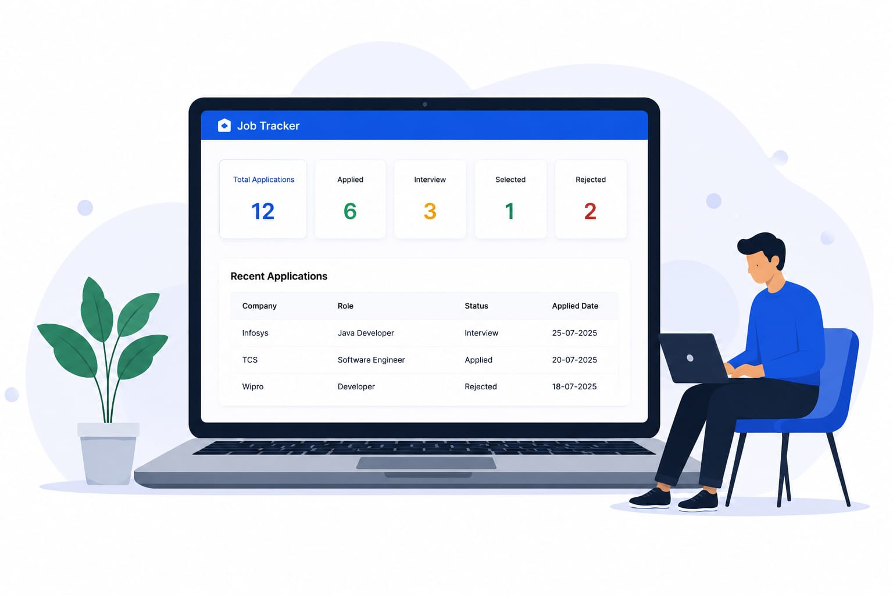

Job Tracker helps you manage all your job applications in one place and never miss an oppurtunity.
Add and track all your job applications
Organise by status: Applied, Interview, Selected, Rejected
Update progress and notes easily
Simple. Secure. Efficient.

Everything you need to organise your job search in one simple page.
Keep all your job applications organized in one place.
Track the status of every application and monitor your progress.
Save interview details, important dates and useful notes.
Manage your entire job search through a clean and simple dashboard.
Searching for a job can involve dozens of applications, interviews and follow-ups, Job Tracker gives you one organized place to manage your entire job search journey.
Get started